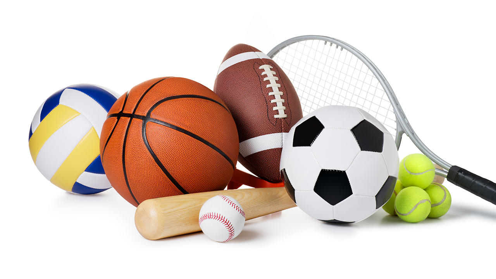

Además en el mismo año pasé al bachillerato donde conocí mis 4 amigos que tengo en la actualidad.

Muy buenos días.
Mi nombre es Juan Pablo Guzmán Alzate tengo 19 años. Nací el 26 de febrero de 2003 en la clínica los farallones, fui el niño más grande de la noche. Viví casi toda mi vida con mi abuela, mi hermana, mi tío, mi pero y mi mama. Estudie mi primaria en el colegio Honorio Villegas en este colegio tuve muchas experiencias buenas y malas. Después con mi hermana y mi mama nos pasamos a vivir en otro sitio.
Además en el mismo año pasé al bachillerato donde conocí mis 4 amigos que tengo en la actualidad.
Tuve muchas experiencias en esos grados. Al finalizar mi bachillerato en el mismo año pude entrar al sena a estudiar telecomunicaciones. Esta tecnología me ha parecido muy interesante y me gustaría avanzar más en mis estudios en los próximos años, quisiera estudiar la ingeniería de telecomunicaciones y luego especializarme en algún campo de esta profesión.

Soy una persona que no tiene preferencia en el tema musical, me gusta canciones de cualquier genero por ejemplo: electrónica, rap, música popular, pop, entre muchos más géneros. Desde pequeño me han gustado todos los géneros y esto es porque en mi antigua casa venían mis tíos y mis primos a escuchar canciones de diferentes géneros y me acostumbre a escuchar un poco de todo.
Los deportes son un aspecto fundamental para mi vida ya que en general una gran parte de mi día a día era ir a jugar baloncesto o ultímate. Mis deportes favoritos son: baloncesto, futbol y Ultimate. Además de estos deportes también me gustan los deporte de riesgo como escalar montañas o también tirarme en paracaídas.
Uno de los pasatiempos es jugar videojuegos con mis amigos ya que la paso genial con ellos y nos reímos de prácticamente todo, también me gusta aprender los método y ver como se mueve el mercado de Colombia. En general me gusta mucho la economía.
En este tema soy un poco ignorante no soy tan bueno con los instrumentos pero quisiera aprender a tocar la guitarra y el piano. Porque son los que más me llaman la atención y algún día los voy a saber tocar.
Soy una persona que le gusta las series y las películas pero tienen que ser buenas para que le tenga cariño y me la vea completa, los géneros que mas me gustan son: acción y ciencia ficción. No me considero alguien que se la mantenga viendo series pero si me llega a gustar soy capaz de verme toda la temporada en muy pocos días.
No soy muy bueno para dibujar o crear cosas a mano, pero soy muy bueno en crear diseños en el computador por ejemplo: soy bueno en el tema de diseño 3D, también utilizando programas de diseño para hacer afiches, carteleras o anuncios.
Mi comida favorita es el pollo con champiñones.
Tengo dos colores favoritos que son: el azul, negro, amo demasiado los animales, soy una persona que es de casa y le encanta pasar tiempo con su familia, por ultimo me gusta ser directo con las personas para no mentir o ser otra persona con ellas.